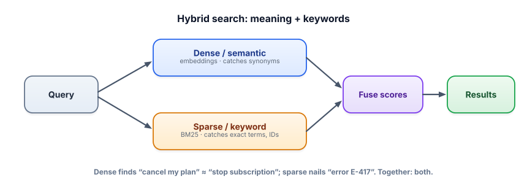

Hybrid search
Semantic search has a blind spot: exact strings. Product codes, names, error IDs, rare jargon — embeddings blur them together. Keyword search nails them but misses paraphrases. Hybrid search runs both and fuses the results, so you stop choosing between meaning and precision.
Why one kind of search isn’t enough
Dense (embedding) retrieval is brilliant at meaning: it matches “stop paying” to “cancel subscription.” But ask it for error code E-417 or SKU X200-BLK, and it often fails — these tokens carry little semantic meaning, so their vectors don’t stand out, and a near-miss code looks just as “similar.” Meanwhile classic keyword search matches exact terms perfectly but is helpless with synonyms (“stop paying” shares no words with “cancel subscription”). The two methods fail in opposite situations — which is exactly why combining them is so effective.
Dense retrieval uses embedding vectors and cosine similarity (semantic match). Sparse retrieval uses keyword statistics — the classic algorithm is BM25, which scores documents by how many query terms they contain, weighted by how rare and frequent those terms are. Hybrid search runs both retrievers and fuses their rankings into one list. A popular, robust fusion method is Reciprocal Rank Fusion (RRF), which combines results by their ranks rather than their (incomparable) raw scores.

Which method wins when
See the complementary strengths directly:
Dense vs. sparse vs. hybrid
Two queries, each a failure case for one method. Watch how hybrid gets both right.
Hybrid retrieval with two free libraries and rank-based fusion:
!pip install rank-bm25 sentence-transformers numpy
import numpy as np
from rank_bm25 import BM25Okapi
from sentence_transformers import SentenceTransformer
chunks = [...] # your corpus
bi = SentenceTransformer("all-MiniLM-L6-v2")
dense_index = bi.encode(chunks, normalize_embeddings=True)
bm25 = BM25Okapi([c.lower().split() for c in chunks])
def rrf(rank_lists, k=60):
"""Reciprocal Rank Fusion: combine rankings by 1/(k+rank)."""
scores = {}
for ranking in rank_lists:
for rank, idx in enumerate(ranking):
scores[idx] = scores.get(idx, 0) + 1.0 / (k + rank)
return sorted(scores, key=scores.get, reverse=True)
def hybrid(query, top=5):
dense_rank = np.argsort(dense_index @ bi.encode([query], normalize_embeddings=True)[0])[::-1]
sparse_rank = np.argsort(bm25.get_scores(query.lower().split()))[::-1]
fused = rrf([list(dense_rank), list(sparse_rank)])
return [chunks[i] for i in fused[:top]]RRF is the workhorse because it needs no score calibration — dense cosines (0–1) and BM25 scores (unbounded) aren’t comparable, but their ranks always are. Add a reranker (Lesson 3.5) on top of the fused list for the strongest pipeline.
- Dense catches meaning/synonyms; sparse (BM25) catches exact terms, codes, names, rare words.
- They fail in opposite cases, so hybrid search (run both, fuse) is more robust than either alone.
- RRF fuses by rank, sidestepping the fact that dense and sparse scores aren’t comparable.
- Hybrid especially helps with identifiers, jargon, and mixed natural-language + keyword queries.
- Best pipeline: hybrid retrieve → rerank → ground.
Users search your docs for exact error codes like ERR_2043 and your pure-semantic retriever keeps returning vaguely-related errors instead. Best fix?
1. Give two query examples from a developer-docs RAG where keyword search beats semantic, and two where semantic beats keyword.
2. Why does RRF combine rankings instead of just adding the dense and sparse scores together?
3. You add hybrid search and quality improves on identifier queries but slightly worsens on some natural-language ones. What knob might fix it?
▸ Show solutions & reasoning
1. Keyword wins: exact symbol/function names (useEffect), error codes (ENOENT), version strings (v2.3.1) — literal tokens with little semantic content. Semantic wins: “how do I run code when a component mounts?” (→ useEffect), “why does my file-not-found error happen?”, “stop the app from crashing on startup” — intent expressed in the user’s own words. Real users mix both, which is why you want both retrievers.
2. Dense cosine scores live in roughly 0–1; BM25 scores are unbounded and depend on term rarity — adding them directly lets one method’s scale dominate arbitrarily. RRF uses only each document’s rank in each list (via 1/(k+rank)), which is unit-free and comparable across methods, so it fuses robustly without fragile score normalization.
3. Re-weight the fusion: if keyword results are crowding out good semantic matches on natural-language queries, give the dense ranking more weight (or BM25 less) in the fusion — many implementations support per-retriever weights, or you can adjust RRF’s k. Tune the balance against an evaluation set (Lesson 3.8) rather than by feel, since the right mix depends on your query distribution.
The dense/sparse split is softening. Learned sparse models like SPLADE keep the exact-term precision and interpretability of keyword search but use a trained model to also include important related terms (a kind of learned query expansion), narrowing the synonym gap. And many vector databases now offer hybrid search natively, so you don’t hand-roll fusion. But the engineering judgment stays the same: know why each retriever exists, and reach for hybrid when your queries mix natural language with literal identifiers — which, for technical and enterprise search, is almost always.
Two cautions. Fusion can’t rescue content that neither retriever finds — if the right chunk is missing from both candidate sets (bad chunking, wrong embedding model), hybrid won’t conjure it; you’re back to recall fundamentals. And more retrievers means more moving parts to tune and monitor; add hybrid because your evaluation shows a real gap on identifier or mixed queries, not because it sounds sophisticated. As always in RAG, let measurement — not vibes — decide which knobs you turn.
You can now find the right chunks reliably. The final step is making the model use them faithfully and tell you where each fact came from. Next: grounding & citations.